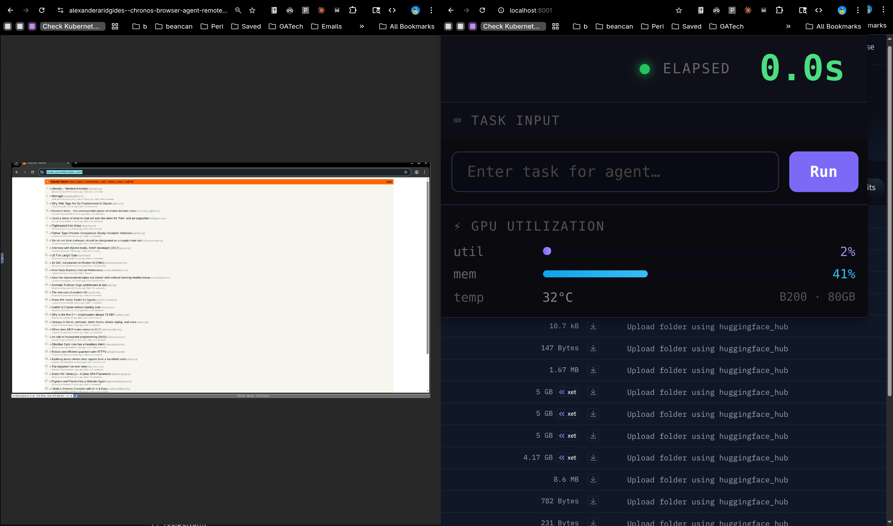

- Specifically trained the Browser Use model in a different quantization to make it 2x faster out of the box with the same accuracy
- Put the browser right on the GPU for additional speed — eliminating all network latency which was another bottleneck
- Gave the agent long-horizon memory and MCP access to improve overall completion rate
